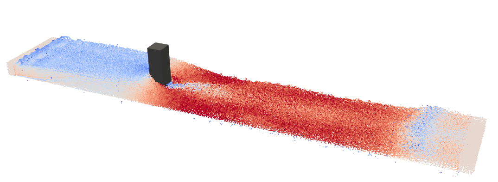

情報

有吉勇揮
東京電機大学 未来科学研究科 建築学専攻 修士2年
趣味はサッカーと映画鑑賞
東京電機大学 未来科学研究科 建築学専攻 修士2年
趣味はサッカーと映画鑑賞
研究

氾濫流が構造物に及ぼす力学的作用の粒子法を用いた評価手法の開発
開水路定常流中の角柱にかかる抗力係数の評価を行っている。粒子法（SPH法）を用いた研究として、DamBreak問題や
2次元問題の研究は充実しているが、上記のような問題での知見は現状少ない。そこで、粒子法（SPH法）を用いた
開水路定常流中の角柱にかかる抗力係数の評価と、それに付随して必要になってくる解像度の指標を提示する事を目標とする。
開水路定常流が角柱に及ぼす圧力と抗力のSPH法による評価と精度検証 卒業論文
開水路に設置された角柱の抗力係数評価に対する浸水深解像度指標 日本建築学会関東支部
SPH法による流入境界条件が開水路定常流中の角柱への抗力に及ぼす影響 日本建築学会（関東）※荷重信頼性部門 若手優秀発表賞
概要
氾濫流が構造物に及ぼす力学的作用の粒子法を用いた評価手法の開発
開水路定常流中の角柱にかかる抗力係数の評価を行っている。粒子法（SPH法）を用いた研究として、DamBreak問題や
2次元問題の研究は充実しているが、上記のような問題での知見は現状少ない。そこで、粒子法（SPH法）を用いた
開水路定常流中の角柱にかかる抗力係数の評価と、それに付随して必要になってくる解像度の指標を提示する事を目標とする。
提出論文
開水路定常流が角柱に及ぼす圧力と抗力のSPH法による評価と精度検証 卒業論文
開水路に設置された角柱の抗力係数評価に対する浸水深解像度指標 日本建築学会関東支部
SPH法による流入境界条件が開水路定常流中の角柱への抗力に及ぼす影響 日本建築学会（関東）※荷重信頼性部門 若手優秀発表賞